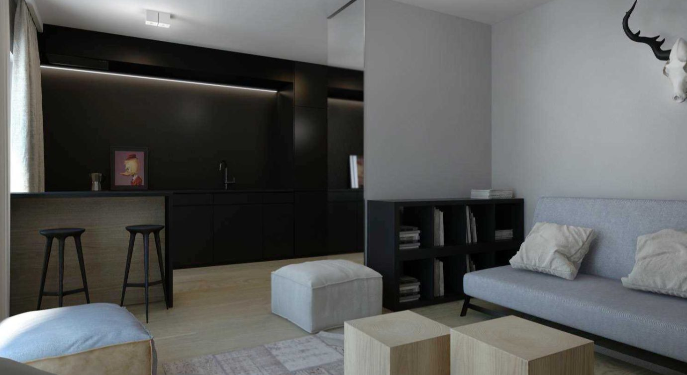
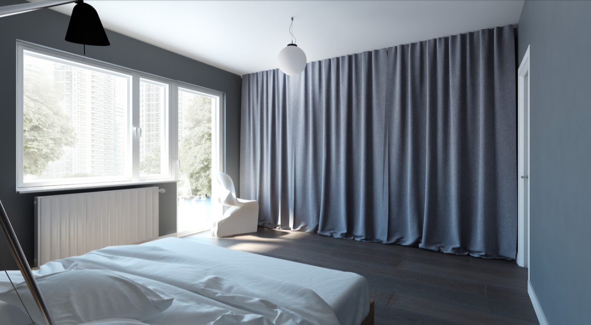
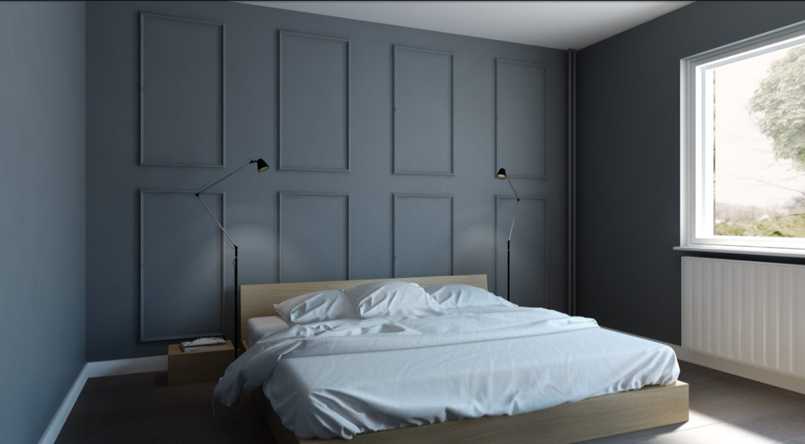
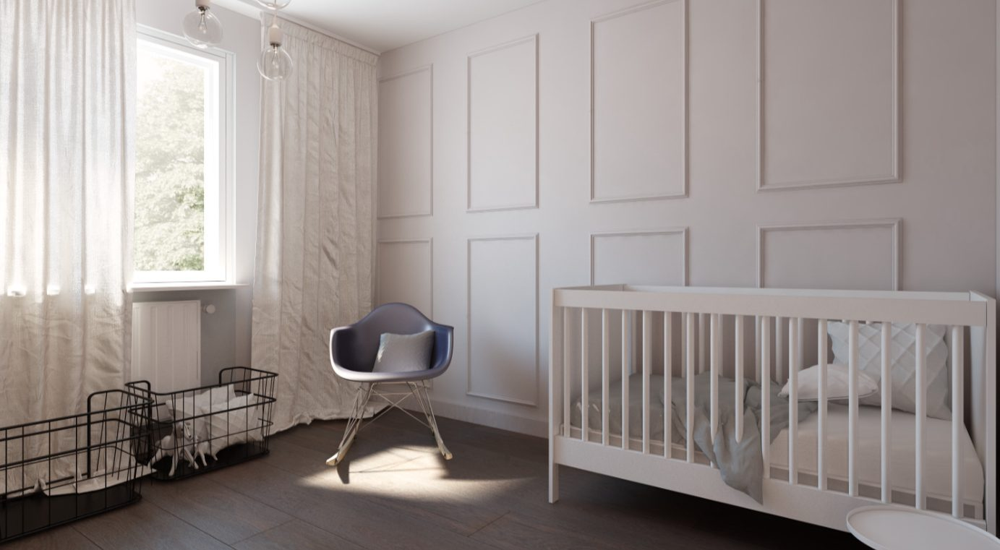
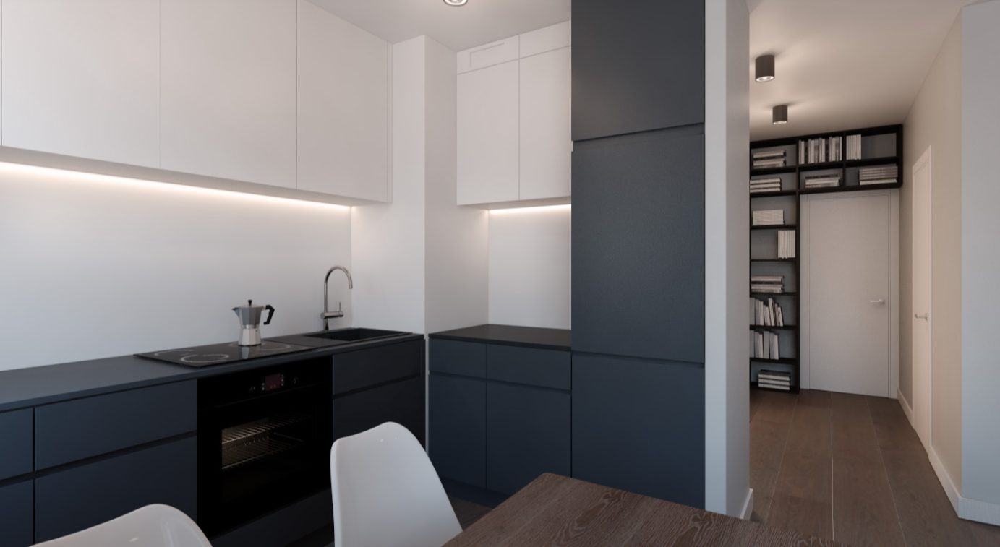
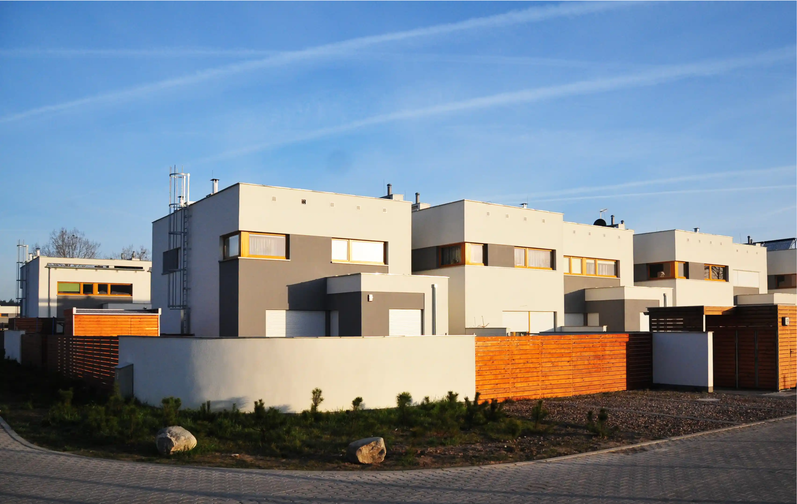
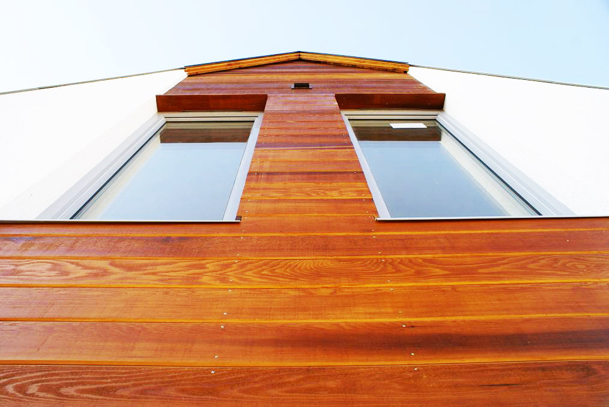

Realizacje







Jesteśmy firmą budowlaną z Poznania, która przez ostatnie 30 lat solidnej pracy zjednała sobie rzeszę zadowolonych klientów i usatysfakcjonowanych partnerów biznesowych.
Tworzymy przedsiębiorstwo, które łączy sprawdzone metody budowlane z osiągnięciami nowoczesnej techniki. Podejmujemy się każdego nowego projektu, w którym możemy wykorzystać nasze wysokie umiejętności i duże doświadczenie w budownictwie. Potężny dorobek zawodowy firmy Kaźmieruk Budownictwo, to zarówno budowa domów w Poznaniu, ale także efektowne budynki użytkowe zarówno w Poznaniu, jak i poza granicami Polski, gdzie równie efektywnie świadczymy nasze usługi budowlane. Każdą inwestycję wykonujemy z najwyższą starannością oraz pełnym zaangażowaniem.
Wykonujemy usługi ogólnobudowlane, realizując je także jako generalny wykonawca, a także usługi remontowe. Zajmujemy się wszelkimi zleceniami budowlanymi, instalacyjnymi i wykończeniowymi od fundamentów aż po dach. Nasza działalność obejmuje zarówno budynki użytkowe, jak i gotowe domy pod klucz. Firma budowlana z naszą wiedzą i pasją do projektowania wnętrz, architektury i budownictwa oraz znajomością mechanizmów rynku, to gwarancja, że ominą Państwa wszystkie zmartwienia związane z planowaną budową.
Firma budowlana Kaźmieruk – zaufaj doświadczeniu.

Rekomendujemy firmę jako solidną, wiarygodną, terminową w branży budowlanej. Doświadczona kadra oraz potencjał techniczny i organizacyjny gwarantują wysoki poziom wykonania usługi. Firma Kaźmieruk Budownictwo jest godna polecenia przy realizacji tego typu prac.
Wspólnota Mieszkaniowa NieruchomościMieliśmy przyjemność współpracować z Firmą Budowlaną Kaźmieruk. Zakres prac obejmował renowację i modernizację magazynów, zaplecza, kuchni oraz sali konsumpcyjnych w naszej Restauracji w kamienicy nr 55 na Starym Rynku w Poznaniu. W związku z powyższym możemy szczerze polecić Firmę Kaźmieruk jako rzetelnego kontrahenta.
Restauracja Ratuszowa PoznańFirma Budowlana Kaźmieruk wykonała dla nas dom jednorodzinny. Wszystkie prace wykonana fachowo i terminowo. Podczas odbioru prac nie stwierdzono błędów w sztuce. Na podkreślenie zasługuje perfekcyjna znajomość prac wykończeniowych oraz pełna dyspozycyjność.
Bogdan Nowak



